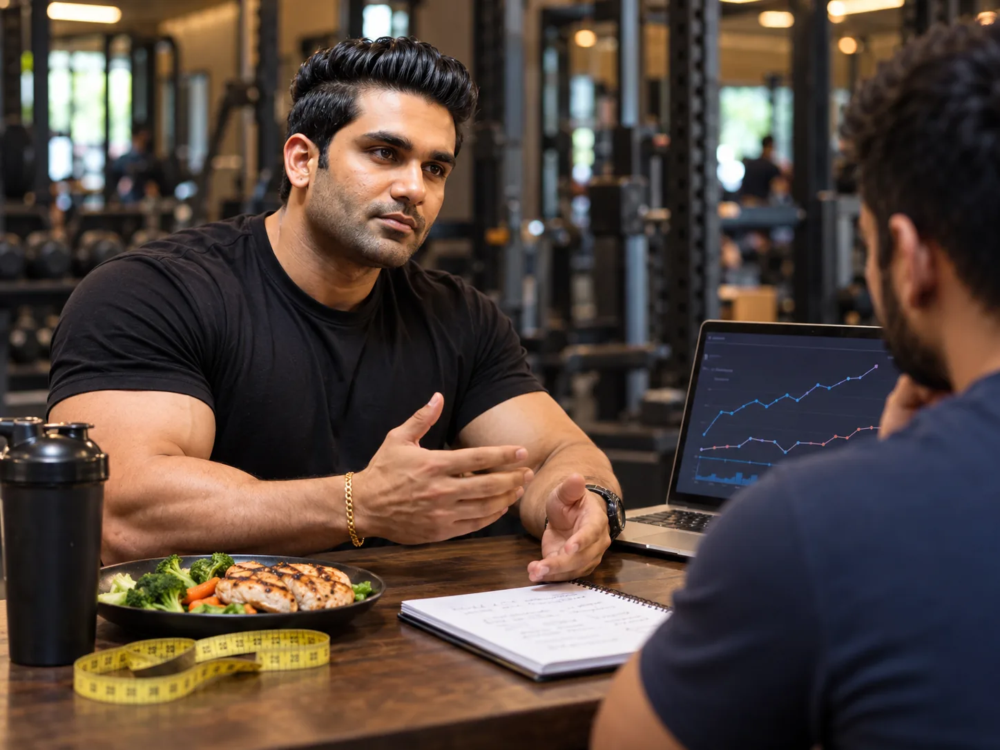
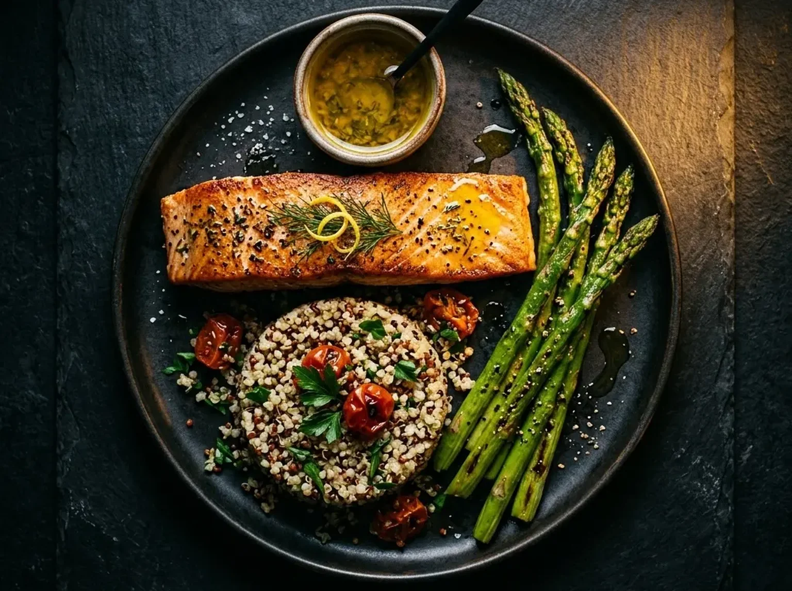
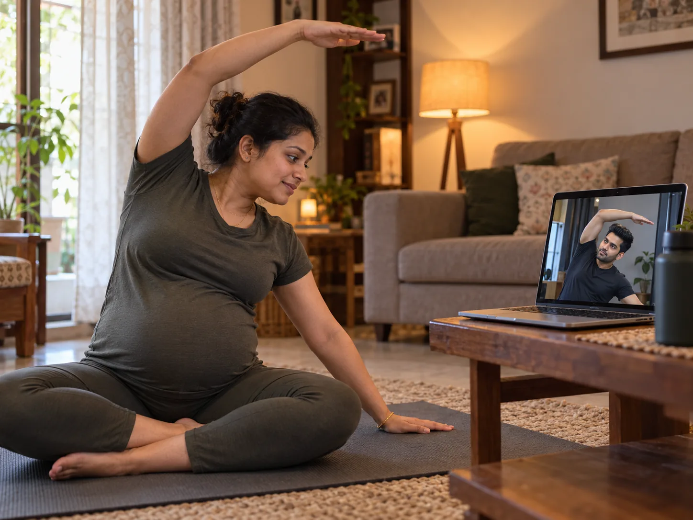
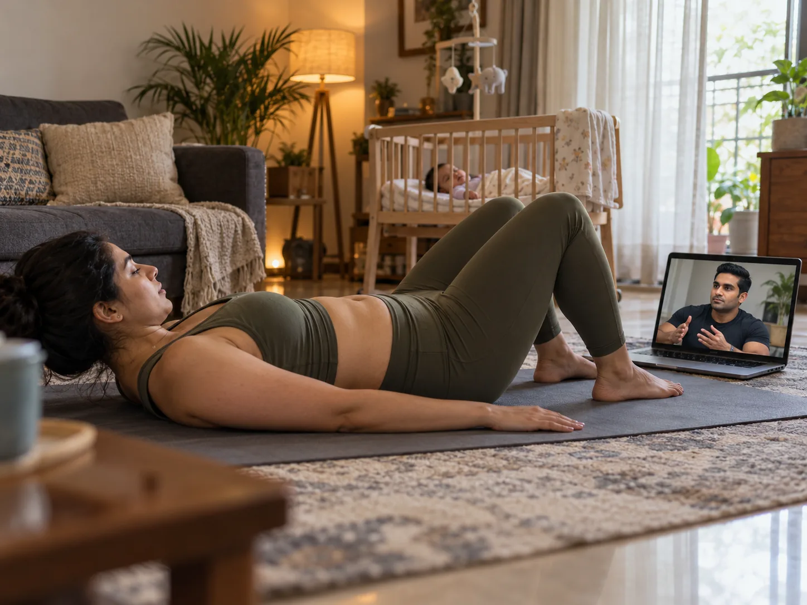
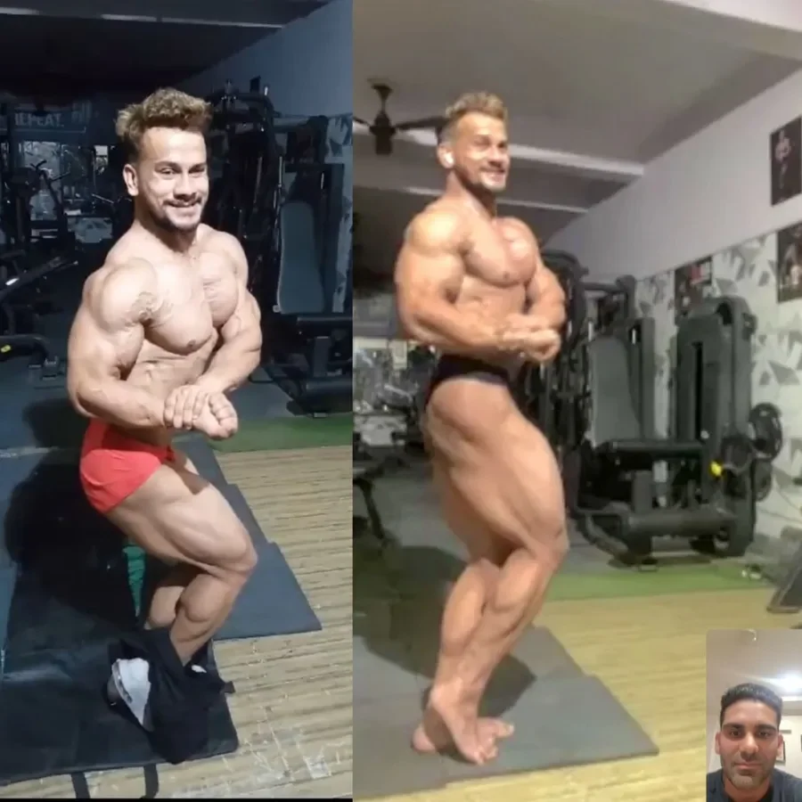
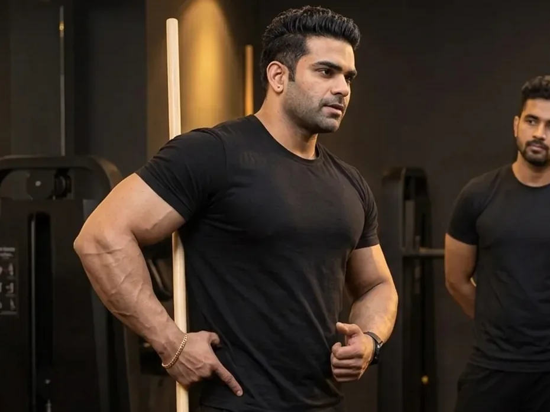

Our Services
Every program is built from scratch. For you. No templates. No guesswork.
Online Personal Training
Global coaching that fits your life. Custom training plans, personalised nutrition, and daily support — delivered wherever you are.
- Custom training plans tailored to your goals
- Custom diet plans built around your food preferences
- Budget-friendly supplement guidance
- Timely Scheduled Check Ins & progress tracking

Fat Loss Program
Science-backed sustainable fat loss that actually works. No crash diets. No detox teas. Just proven metabolic science.
- Metabolic assessment & body composition analysis
- Progressive training for maximum calorie burn
- Nutritional periodisation through every phase
- Lifestyle integration for long-term results
Muscle Building
Structured hypertrophy programming customised for your body type. Build lean mass, increase strength, and reshape your physique.
- Custom hypertrophy plans for your body type
- Caloric surplus strategies for clean gains
- Progressive overload & periodisation
- Supplement guidance for optimal growth
Contest Prep
Full competition preparation from off-season to the stage. Peak week protocols, posing, and stage-ready conditioning.
Get Prepped Under the shadow of a National Bodybuilding Judge
- Men's and Women's categories, including the Women's Bikini division
- 12–24 week prep cycles with structured timelines
- Carb cycling & water manipulation protocols
- Training & exercise plan built for stage conditioning
- Posing coaching & stage presentation
- Stage readiness assessment & peak week planning
Nutrition / Diet Consultancy
Diet-only coaching for clients who train on their own but want expert nutrition guidance.
- Custom macro & meal plan
- Monthly plan revisions
- Direct WhatsApp support for diet queries
- Supplement guidance included


Antenatal Postnatal Care
Safe, effective exercise training and nutrition for mothers. From pregnancy through postpartum recovery — your health comes first.
- Trimester-wise safe strength, mobility, core, pelvic-floor & breathing-safe exercise progression
- Specialized Labour Prep for Normal Vaginal Birth
- Strategic Training in case of Breech Presentation
- Trimester wise Strategic Nutritional & Supplementation Intervention
- Postnatal recovery & core restoration
- Specialist-recommended protocols
Postpartum Care — Training & Nutrition
A full rebuild — core, strength and nutrition — after childbirth.
- Pelvic floor & core restoration first
- Progressive strength rebuilding
- Nutrition for recovery & breastfeeding
- Timely Scheduled Check Ins

Child Nutrition
Guided nutrition support to build healthy habits in growing kids — from a single consult to a full month.
- Full nutrition assessment & starter meal plan
- Age-appropriate meal planning
- Parent education on portioning & habits
- Growth-focused, not restrictive
Bodybuilding Posing Coaching
One-on-one virtual sessions to master stage presence and mandatory poses.
- All mandatory poses for your category
- Transition & walking practice
- Stage confidence coaching
- Video review after every session


Offline "Exercise Training Execution Camp"
In-person intensive to correct your form and lock in technique, face-to-face.
- 3–5 days of in-person sessions
- Hands-on form correction
- Personalized take-home program
- Best for clients near Aman's location
On-Call Consultation
Discuss your health & physique goals, clear all your doubts, get answers to all your unanswered questions, and understand our approach before moving forward to join any of our plans.
₹2000 / 30-min call — Refundable if you enroll in any coaching plan after the call
- 30-minute personal consultation session
- Diet, training & supplement Q&A
- Actionable plan you can start immediately
- Book anytime that suits your schedule
Conditions & Specialized Health Management
Training and nutrition planned around your health condition and life stage.
- PCOS / PCOD
- Hypertension
- Dyslipidemia
- Pre-Diabetic / Type 2 Diabetes
- Sarcopenia (Muscle Loss with Aging)
- Perimenopause / Menopause
- Hypothyroidism
- Postpartum Recovery
- Post-Surgical Rehab
- Amenorrhea
- Digestive & Gut Health Issues
- Uric Acid / Gout
- Fatty Liver (NAFLD)
PCOS / PCOD & Hormonal Health
Targeted resistance training and insulin-sensitive nutrition for PCOS / PCOD, Hypothyroidism, Amenorrhea, and Perimenopause / Menopause.
Cardiometabolic Conditions
Structured protocols for Pre-Diabetic / Type 2 Diabetes, Hypertension, Dyslipidemia, Fatty Liver (NAFLD), and Uric Acid / Gout.
Sarcopenia (Muscle Loss with Aging)
Combatting age-related muscle loss and supporting Geriatric Health through progressive strength training and protein-focused nutrition.
Labour Preparation & Postpartum
Specialized Labour Prep for Normal Vaginal Birth, Breech Presentation support, and Postpartum pelvic floor & core recovery.
Digestive, Gut & Post-Surgical Rehab
Gut-friendly nutritional interventions and safe post-surgical rehabilitation to rebuild mobility and strength.
Pediatric Nutrition & Counseling
Science-backed nutrition for growing children and 1-on-1 lifestyle counseling for long-term adherence.